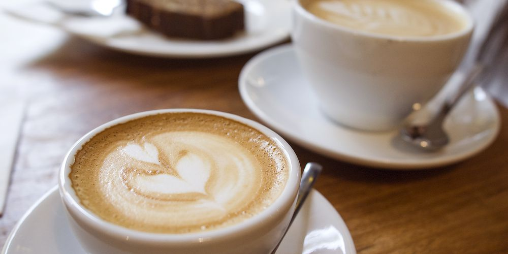
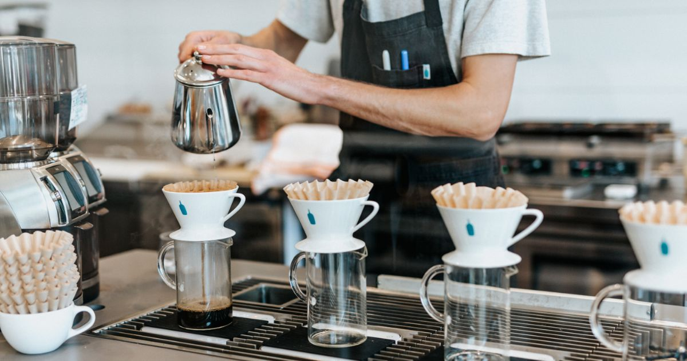
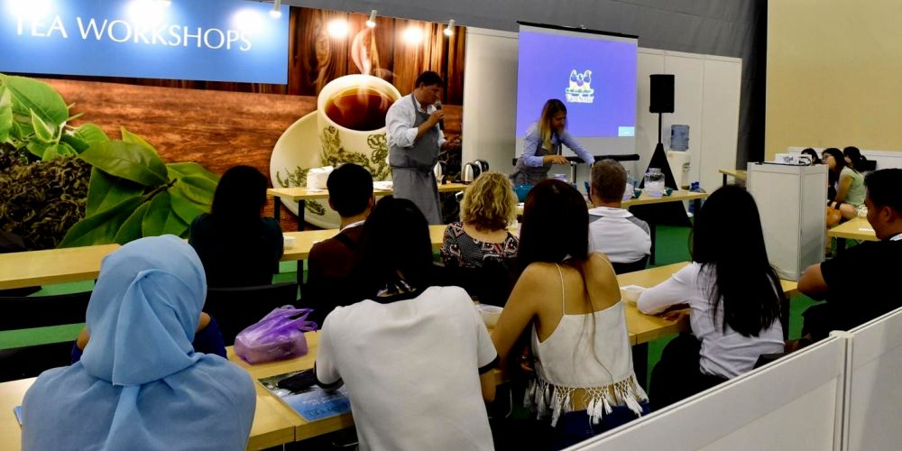

El corazón de nuestra cafetería es, por supuesto, el café.
En Lyn’s Coffee trabajamos con granos de origen cuidadosamente seleccionados, tostados por expertos locales que comparten nuestra pasión por la calidad y la sostenibilidad. Ofrecemos variedades que destacan por sus perfiles aromáticos únicos —desde notas afrutadas y florales hasta matices achocolatados y especiados— para que cada taza sea una experiencia sensorial.
Nuestros métodos de preparación incluyen espresso, prensa francesa, V60 y cold brew, entre otros, y nuestros baristas están capacitados para resaltar lo mejor de cada café. Creemos que una buena bebida comienza mucho antes de llegar a la taza: en el respeto por el cultivo, el comercio justo y el arte de tostar con precisión.

Detrás de Lyn’s Coffee hay un equipo diverso, creativo y apasionado. Nuestros baristas no solo preparan bebidas: te escuchan, te aconsejan y te acompañan en tu experiencia. Nuestro equipo de cocina elabora repostería casera inspirada en recetas familiares y sabores honestos. Nos une algo más que el trabajo: una filosofía común basada en la amabilidad, la colaboración y el gusto por los pequeños grandes detalles.

Nos sentimos profundamente conectados con nuestra comunidad. Por eso, abrimos nuestras puertas a artistas locales, organizamos eventos culturales, clubes de lectura, mercados creativos y más. También trabajamos con productores y tostadores locales que comparten nuestros valores de calidad y respeto por el origen del café. Lyn’s Coffee no es solo nuestro proyecto, es un pedacito de muchas historias compartidas.